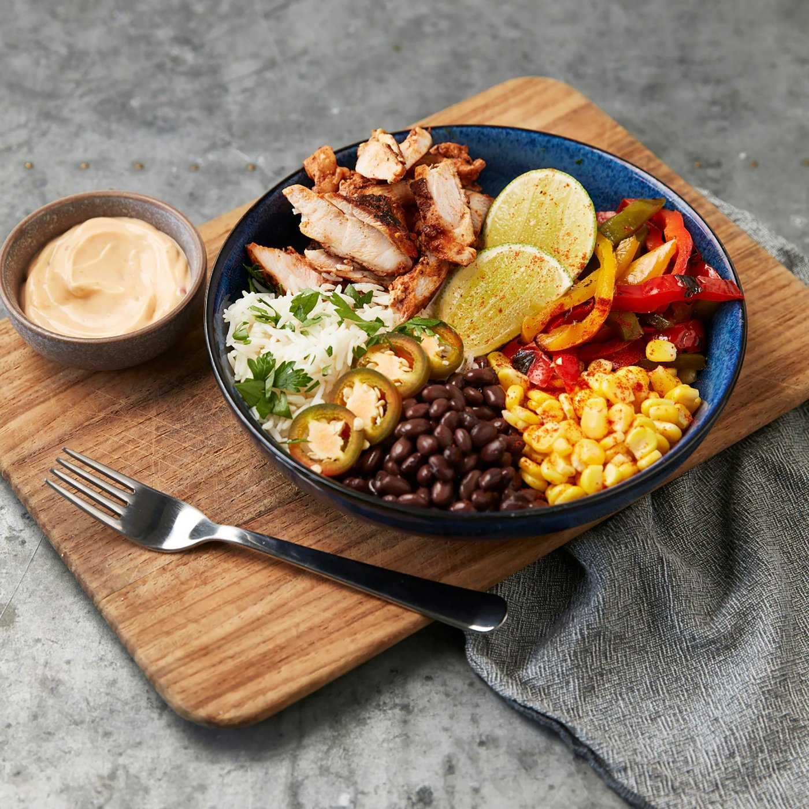

Off by defaultWatch Camera Roll
Snap your meal. It logs itself.
Turn on Watch Camera Roll, and new food photos are logged for you.


Logged

Logged

Logged
Sent,
not a meal
not a meal
While it is on, every new photo goes to your AI, which decides whether it shows a meal. iOS decides when the background scan runs.